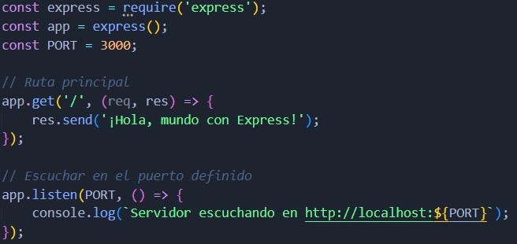
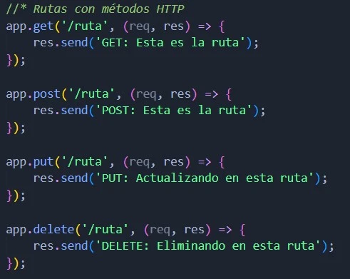
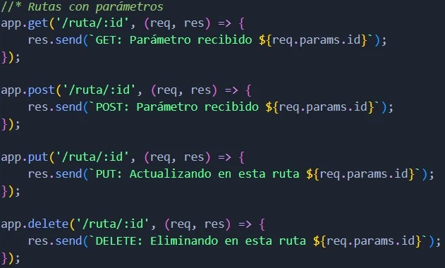
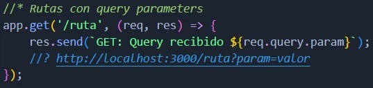
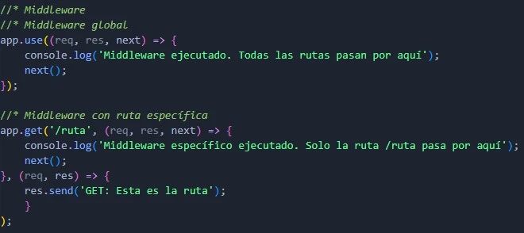
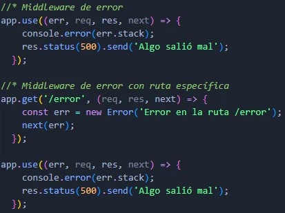
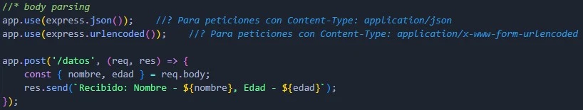

Crear un servidor
- express():
- Inicializa una nueva aplicación Express.
- app.get():
- Define una ruta para manejar solicitudes GET.
- app.listen():
- Hace que el servidor escuche en un puerto específico.
Express es un framework minimalista y flexible para Node.js, diseñado para construir aplicaciones web y APIs. Ofrece una abstracción más sencilla y potente sobre el módulo http nativo de Node.js, facilitando la creación de aplicaciones robustas y escalables.
Las rutas se utilizan para responder a solicitudes específicas de URL y métodos HTTP.
Los parámetros de ruta se utilizan para capturar valores específicos en las URL.
Los Query parameters se utilizan para enviar datos a través de la URL. Se consultan agregando un signo de ? a la url seguido de la clave del parametro = su valor.
El método app.route() se utiliza para manejar varias solicitudes HTTP en un solo punto de ruta sin necesidad de repetir la ruta en cada método.

El método app.Router() permite modularizar rutas y manejadores. Esto es util cuando se tiene un proyecto grande y se necesita organizar las rutas en diferentes archivos.
| Características | app.route() | express.Router |
| Propósito | Manejar múltiples métodos en una ruta. | Modularizar y agrupar rutas relacionadas. |
| Uso principal | Simplificación para rutas específicas. | Estructuración y escalabilidad de la app. |
| Escalabilidad | Limitada a rutas únicas. | Ideal para proyectos grandes. |
| Sintaxis | Más concisa para casos simples. | Más código, pero mejor organización. |
El middleware es una función que se ejecuta antes de que se ejecute una ruta. Se utiliza para realizar tareas comunes a todas las rutas, como la validación de datos, la autenticación de usuarios y el manejo de errores.
Express maneja los errores de forma predeterminada, pero se pueden personalizar los mensajes de error y las respuestas a través de middleware.
Express no analiza automáticamente los cuerpos de las solicitudes. Para manejar datos enviados desde formularios o como JSON, utiliza el middleware express.json() y express.urlencoded().
